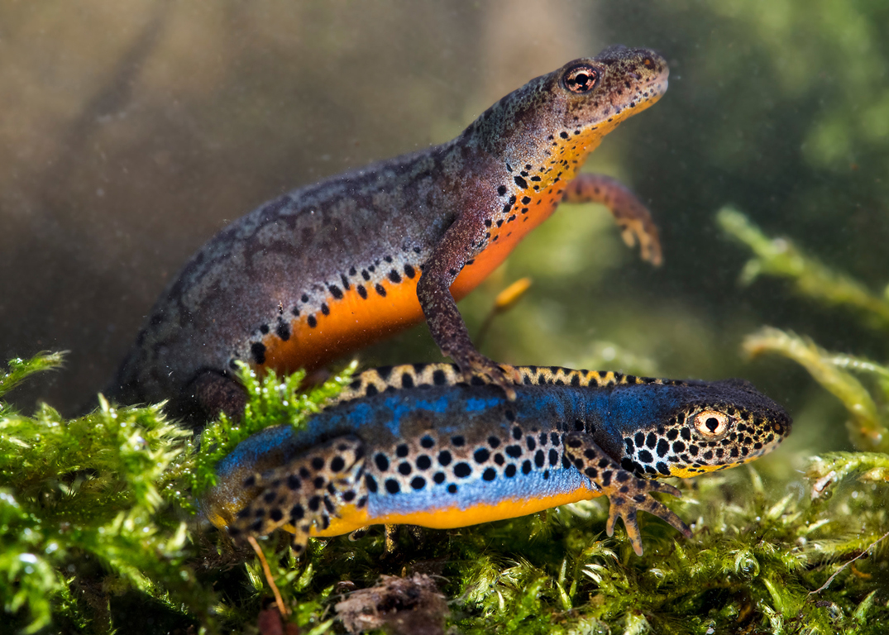
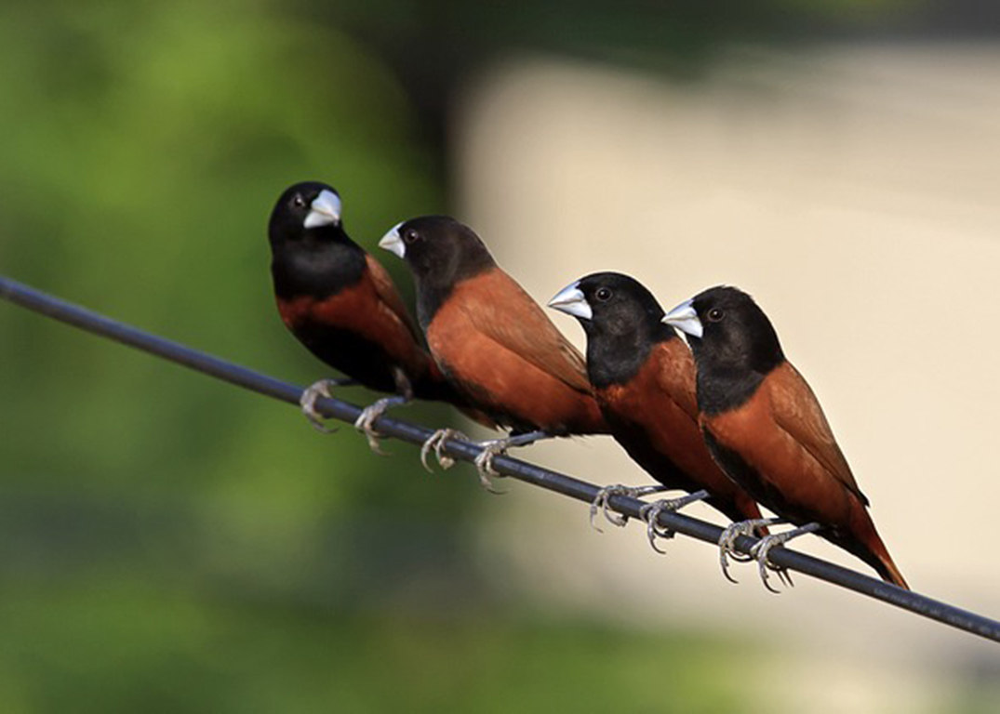

|
Zoologia

Con il solo 6,8% della superficie della Svizzera, il Cantone Ticino ospita una percentuale notevole delle specie di vertebrati distribuite sul territorio nazionale. Sono presenti nel Cantone, per esempio, il 62% dei pesci, circa il 75% dei mammiferi e più dell'80% dei rettili. Le quasi 300 specie di uccelli segnalate in Ticino dalla fine del secolo scorso ad oggi rappresentano a loro volta oltre il 40% dell'intera avifauna europea. Alcune specie sono presenti in Svizzera unicamente nel Ticino.
|
Il settore Zoologia si occupa degli aspetti inerenti alle specie dei vertebrati (tra cui mammiferi, anfibi, rettili, uccelli…) e delle specie degli invertebrati (cnidari, vermi, aracnidi,…) distribuiti sul territorio nazionale
Il settore di zoologia degli invertebrati copre l’intero spettro degli animali cosiddetti ‟inferiori”, uno sterminato mondo di organismi che annovera fra le sue fila le spugne, i cnidari (idre, meduse e affini), le molte forme di vermi piatti, a nastro e cilindrici (tra cui il comune lombrico), i molluschi (chiocciole, limacce, bivalvi), gli aracnidi (ragni, opilioni, scorpioni e affini), i miriapodi (millepiedi e centopiedi), i crostacei (gamberi e altri organismi acquatici del plancton), nonché tutti gli insetti (dalle zanzare alle farfalle, dalle api alle formiche, dalle libellule ai cervi volanti).
|
|
Mammiferi
La classe dei mammiferi conta 5 500 specie attualmente viventi, variabili in forma e dimensioni: dai pochi centimetri e due grammi di peso del mustiolo agli oltre 30 metri e 150 tonnellate della balenottera azzurra, il più grande mammifero finora apparso sulla Terra. I mammiferi colonizzano praticamente ogni ambiente, dalle calotte glaciali ai caldi deserti: alcuni gruppi (sirenii, pinnipedi, cetacei) sono riusciti a colonizzare con successo anche l’ambiente
acquatico, mentre altri hanno sviluppato delle ali membranacee e sono perciò in grado di volare (chirotteri).
|
I mammiferi (Mammalia Linnaeus) sono una classe di vertebrati a diffusione cosmopolita caratterizzata dall’allattamento della prole.

Nonostante tali differenze di dimensioni e abitudini di vita, tutti i mammiferi sono accomunati dall’essere omeotermi ovvero endotermi, dal presentare viviparità (con l’eccezione dei monotremi, che sono ovipari) e dall’avere cure parentali che prevedono anche l’allattamento della prole: tutti fattori che sono stati determinanti per consentire a questa classe di espandere notevolmente il proprio areale nelle nicchie rimaste vuote dopo la scomparsa dei dinosauri.
|
|
Mammiferi / Stambecco Storia
Circa 100.000 anni fa, lo stambecco viveva in tutte le regioni rocciose dell’Europa centrale. È stato anche fonte d’ispirazione per i popoli del Paleolitico, che lo disegnavano nelle grotte in cui vivevano, come appare nelle pitture murali delle grotte di Lascaux in Francia.
Fino al XV secolo, era presente lungo tutto l’arco alpino, ma lo sviluppo delle armi da fuoco segnò ben presto la sua fine in quei territori. La medicina dell’epoca poi, tutta incentrata sulla superstizione, gli fu fatale.
Le corna, ridotte in polvere, furono utilizzate come rimedio contro l’impotenza ed il sangue come rimedio per i calcoli renali. Lo stomaco, infine, fu indicato per combattere la depressione. Tali credenze persistettero fino al XIX secolo, quando ormai si contavano solo poche centinaia di individui nelle Alpi italiane e francesi, mentre era completamente scomparso in Svizzera.
La specie deve la sua sopravvivenza alla famiglia reale italiana. Fu infatti il re Vittorio Emanuele II che fece proteggere, nel 1856, gli ultimi esemplari, per riservarli alla sua caccia personale in una riserva privata situata in Valsavarenche, dove, per suo ordine, un gruppo di guardacaccia li proteggeva da altri cacciatori. Ad oggi, la Valle d’Aosta ed il Piemonte sono le uniche regioni dell’arco alpino in cui la specie non sia mai scomparsa in tempi storici.
|
Lo stambecco delle Alpi (Capra ibex) è un mammifero dell’ordine degli Artiodattili,
della famiglia dei Bovidi e della sottofamiglia dei Caprini, diffuso lungo l’Arco alpino. Distribuzione e habitat
Lo stambecco è attualmente diffuso in tutto l’arco alpino, dalle Alpi Marittime a ovest sino alle Alpi di Carinzia e di Slovenia a est, ad altitudini comprese tra 500 e 3000 m s.l.m. Sebbene il suo areale si sia notevolmente ampliato nel corso del XX secolo, la sua distribuzione è tuttora abbastanza frammentaria.
Fatta eccezione per quella del Parco nazionale del Gran Paradiso, tutte le attuali popolazioni sono il frutto di reintroduzioni (Francia, Svizzera, Austria e Germania) o di nuova introduzione (Slovenia e Bulgaria).
Il suo habitat tipico è costituito dagli ambienti rocciosi di alta quota, al di sopra della linea degli alberi. I costoni rocciosi scoscesi esposti a sud ricchi di vegetazione erbacea sono l’ambiente preferito. A livello subalpino li si può incontrare in aree aperte e soleggiate con presenza di affioramenti rocciosi.
|
|
Uccelli

In base a diversi criteri di classificazione, il numero di specie di uccelli conosciute oscilla fra le 9000 e le 10500, delle quali almeno 120 si sono estinte in tempi storici.
Gli uccelli hanno ali più o meno sviluppate; gli unici non forniti di ali sono i moa e gli uccelli elefante, entrambi estinti tra l’XI e il XVIII secolo. Le ali consistono di braccia specializzate, e la maggior parte delle specie riesce a volare. Tra gli uccelli non volatori ci sono i ratiti, i pinguini, e varie specie isolane. Certi uccelli, come i pinguini e gli anseriformi, sono nuotatori specializzati. Altri, come i corvidi e i pappagalli, sono tra gli animali più intelligenti, capaci d’utilizzare attrezzi e di lasciare in eredità comportamenti non congeniti, in effetti formando una sorta di cultura.
|
Gli uccelli (Aves) sono una classe di dinosauri teropodi (dinosauri aviani) altamente specializzati caratterizzati dalla presenza di becchi sdentati
e forcule, code corte con pigostilo, corpi ricoperti di piumaggio e ripieni di sacchi aeriferi, dita anteriori fuse, uova dai gusci duri, metabolismi alti e ossa cave ma robuste.
Molte specie sono migratorie, traversando distanze notevoli annualmente. Gli uccelli sono sociali, comunicando con segnali visuali, richiami, canti, e partecipando in altri comportamenti sociali, inclusi la riproduzione cooperativa, la caccia, la formazione di stormi, e l’assalto cooperativo ai predatori. La maggioranza degli uccelli sono temporaneamente monogami, mentre altri dimostrano comportamenti poligini e (più raramente) poliandri. Le uova sono solitamente covate e incubate nei nidi.
Gli uccelli sono i tetrapodi più abbondanti, con circa diecimila specie (la metà di esse classificate come passeridi). Vivono in quasi tutto il mondo, variando in grandezza da 5 cm per il colibrì di Elena, fino a tre metri per l’uccello elefante.
I reperti fossili indicano che gli uccelli propriamente detti ebbero origine durante il Cretaceo, circa cento milioni di anni fa. Ci furono però uccelli primitivi al di fuori dal gruppo Avialae che risalivano sino dal periodo Giurassico. Molti di questi uccelli primitivi, come Archaeopteryx, non erano capaci di volo potenziato, e molti ritenevano tratti primitivi come denti e code lunghe. |
|
Uccelli /
Culbianco ▶ Audio Verso Culbianco
▶ Audio Canto Culbianco
|
Il culbianco (Oenanthe oenanthe) è un uccello passeriforme della famiglia dei Muscicapidi.

Descrizione
La lunghezza di questo uccello insettivoro è di circa 14 cm, per 26 grammi di peso. [senza fonte]
Il dimorfismo sessuale è marcato nella stagione riproduttiva: il maschio si presenta con dorso e vertice di colore grigio, remiganti e coda neri, sottopancia bianco, mentre la femmina è di colore marroncino con sopracciglio giallastro.
Distribuzione e habitat
Lo si incontra in tutta Europa, e buona parte di Asia, Africa ed America del Nord; in Italia è visibile nelle zone montagnose, in alcuni rari casi anche sul livello del mare, riserva saline di Priolo (Sicilia) e anche nella piana di Gela in Sicilia [senza fonte]).
|
|
Uccelli / Merlo dal collare ▶ Audio Verso Merlo dal collare
|
Il merlo dal collare (Turdus torquatus Linnaeus)
è un uccello della famiglia dei Turdidi. 
Le tre sottospecie del merlo dal collare sono distribuite dall’Europa nord-occidentale al Turkmenistan. Il maschio adulto, nerastro o marrone-nerastro, si riconosce per la caratteristica banda pettorale bianca, che manca nella femmina. Uccello territoriale, vivace, nel periodo riproduttivo ha abitudini solitarie, per poi divenire gregario nel resto dell’anno. Come per la maggior parte dei Turdidi, la sua dieta dipende dalle disponibilità offerte dall’ambiente e varia a seconda della stagione: insettivoro durante la stagione riproduttiva e frugivoro in autunno-inverno. La stagione riproduttiva, compresa tra aprile e luglio, varia con la latitudine. I pulcini, accuditi da entrambi i genitori, abbandonano il nido a due settimane di età, ma rimangono nelle vicinanze fino al raggiungimento della completa capacità di volo.
|
|
Uccelli / Sordone ▶ Audio Verso Sordone
|
Il sordone (Prunella collaris) è un uccello della famiglia Prunellidae.

Descrizione
È simile a un passero, ma con becco sottile; il folto piumaggio ne rende la silhouette assai compatta. Il colorito bruno è ravvivato dalle strie bruno-rossastre dei fianchi e dalla gola bianca macchiettata di nero, quest’ultima evidente solo negli adulti osservati a breve distanza.
Verso
Sia il verso di richiamo che il canto ne consentono un’agevole localizzazione; il canto può essere emesso da uno spuntone di roccia oppure in volo e assomiglia a quello dell’allodola.
|